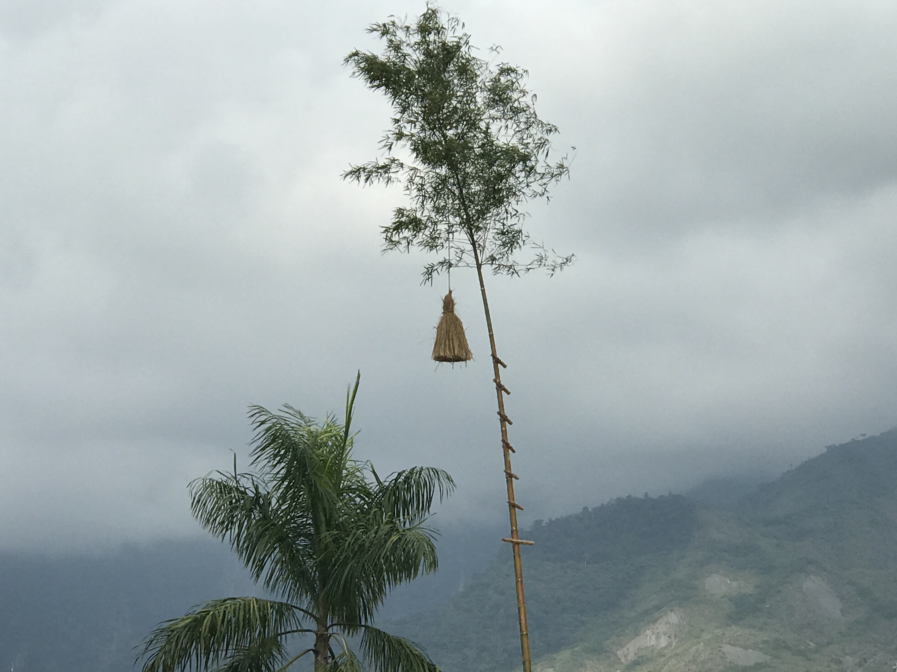
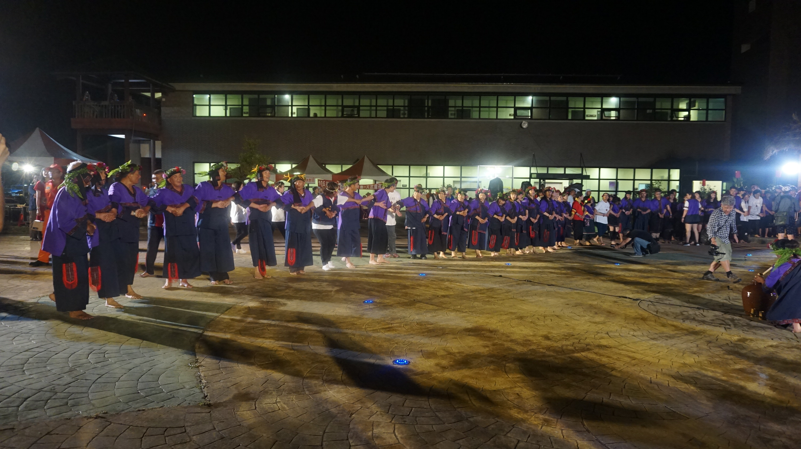

每年的農曆9月15號為小林夜祭
夜祭的主要意義是還願及敬神，感謝祖靈一年來的照顧，並藉由歌謠表達敬意
還沒到小林服役時，我不知道有這個活動
10/16來到小林，剛好11/3號有參加到夜祭的活動
老師告訴我說可以參加走鏢原本聽到想說是射飛鏢嗎，是的話也太酷了吧
結果是慢跑3000啦，挖哩到台南專訓才跑過一次測驗3000
已經快一個月沒跑步了，趕緊惡補了幾天!
中午學校就放學大家一起到社區參加夜祭
然後開始抓雞和抓豬趣味競賽

看著雞亂跑亂小跳躍小飛，我實在是不敢抓牠的腳rrrrr，小朋友都比我猛
還有抓豬

接著要開始走鏢啦

幾乎參加的都是小林國小的
跑山路真的是比平地還要累阿，結果飲恨拿了第四名，前三名才有獎金
接著下午三點開始立向竹

再來4點30分祭祀太祖，6點30分開始夜祭
隨後族人上場「牽戲」（族人手拉手吟唱古調）凝聚向心力
晚上小朋友的表演也要開始啦
首先陶笛表演

舞蹈表演

族人跳牽戲

最後就成功地結束啦，對我來說是個很特別的體驗，這邊的居民平常就比較少了
在夜祭這一天，在外工作的族人都會回來，彼此相聚
因為節慶將大家凝聚一起，我想這是節慶的一種意涵吧